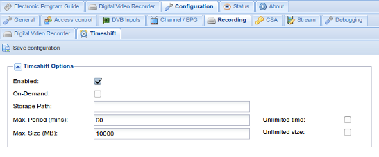

Configuration - Recording - Timeshift
This tab is used to configure timeshift properties.

Menu Bar/Buttons
....
Configuration options
Enabled : Turn on and off timeshift.
On-Demand : Turn this on to start timeshift buffer on pause. In this mode you cannot rewind the buffer (it always begins on the currently playing frame). Without this option there will be a permanent, circular, buffer up to the limits defined below.
Storage Path : Where the timeshift data will be stored. If nothing is specified this will default to CONF_DIR/timeshift/buffer
Max. Period (mins) : Specify the maximum time period that will be buffered for any given (client) subscription.
Unlimited : If checked, this allows the timeshift buffer to grow unbounded until your storage media runs out of space (WARNING: this could be dangerous!).
Max. Size (MegaBytes) : Specifies the maximum combined size of all timeshift buffers. If you specify an unlimited period its highly recommended you specifying a value here.
Max. RAM Size (MegaBytes) : Specifies the maximum RAM (system memory) size for timeshift buffers. When free RAM buffers are available, they are used instead storage to save the timeshift data.
Unlimited : If checked, this allows the combined size of all timeshift buffers to potentially grow unbounded until your storage media runs out of space (WARNING: this could be dangerous!).
Changes to any of these settings must be confirmed by pressing the ‘Save configuration’ button before taking effect.
NOTE: These settings represent server side maximums, however the clients can request smaller buffers or even not to create a buffer at all (for example should they not support timeshifting).